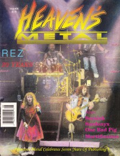

Heaven's Metal, Jul / Aug 1992, #36
| Cover |
|---|
|  |
| Writers in this Issue |
| Adolph, Bruce Bach, David Beeman, Bob Gwozdiewicz, Mark Hart, David S. Kozenek, Joseph Scheetz, Jeff Sterling, Phil Van Pelt, Doug |
Resurrection Band
Cover Feature:- "Rez: XX Years of Honest Ministry" by Doug Van Pelt
- "Metal Praise: Worshipping At Full Volume" by Doug Van PeltMetal Praise
- "Seraiah Out of The Carnival World" by Doug Van Pelt
- "The Vision of Sardonyx" by Doug Van Pelt
- "Working Hard To Have Fun" by David S. Hart
- "Mortification's Death Metal Assault" by Doug Van Pelt
- "Heaven's Metal: Looking Back At The First Seven Years" by Doug Van Pelt
- Primus by Doug Van Pelt
- Angelica - Time Is All It Takes by Doug Van Pelt
- Mortification - Scrolls of the Megilloth by Doug Van Pelt
- Resurrection Band - Twenty Years by Doug Van Pelt
- various artists - Heaven's Metal Collections by Phil Sterling
- Seraiah - Seraiah by Doug Van Pelt
- various artists - Demolition by Doug Van Pelt
- Sardonyx - Majestic Serenity by Doug Van Pelt
- various artists - Argh!!! R.E.X. sampler by Doug Van Pelt
- Shout - At the Top of Their Lungs by Doug Van Pelt
- various artists - Sanctuary Praise II by Doug Van Pelt
- Ezra - The Key by Doug Van Pelt
- Modest Attraction - demo by Doug Van Pelt
- Tera - demo by Doug Van Pelt
- Judgement - demo by Doug Van Pelt
- Weeping Prophet - demo by Doug Van Pelt
- Abhor Evil - demo by Doug Van Pelt
- Joe & The Coffeemakers - demo by Doug Van Pelt
- 7th Heaven - Planet Under Seige by Bruce Adolph
- King's Gate - demo by Doug Van Pelt
- Kreyson by Joseph Kozenek, Mark Gwozdiewicz
Inside / Outside by David Bach
Poster:Licks & Tricks by Jeff Scheetz
HM Back Page: "Our God Is a Father"
Relevant Links
For more information about HM visit .You may be able to find HM in a library near you: Worldcat

© 2011 CMnexus. Last updated September 2019. Contact: editor -AT- cmnexus -DØT- org About